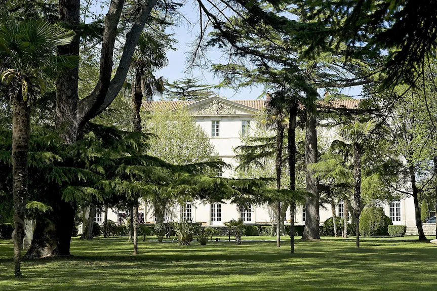

Plantation
Plantation de plantes et d’arbres, notamment méditerranéens, et composition de massifs végétalisés.
Portfolio · Aménagement paysager
Étudiant en BTS Aménagement paysager, je présente ici mon parcours, les techniques abordées et quelques chantiers auxquels j’ai participé.
À propos
Mon parcours associe une formation en sciences et technologies de l’agronomie et du vivant à une spécialisation en aménagement de l’espace. Je poursuis actuellement un BTS Aménagement paysager.
À travers ce portfolio, je souhaite présenter mon parcours de formation et les chantiers auxquels j’ai participé, notamment des travaux de plantation, de paillage, d’irrigation et d’aménagement extérieur.
Savoir-faire
Voici les techniques et types de travaux cités dans mon parcours. Cette liste pourra être précisée selon mon niveau d’autonomie et les outils réellement utilisés.
Plantation de plantes et d’arbres, notamment méditerranéens, et composition de massifs végétalisés.
Pose de poutres en bois pour structurer des massifs végétaux.
Pose d’un système d’arrosage au goutte-à-goutte sur les chantiers mentionnés.
Pose de bâche et mise en place de paillage, dont du BRF (bois raméal fragmenté).
Pose de poutres en bois pour les massifs et participation à la création d’une terrasse en bois.
Participation au terrassement du site du Château de Lignan-sur-Orb.
Outils et matériels utilisés : à compléter avec les outils que vous avez réellement manipulés.
Sélection de chantiers
Deux chantiers présentés à partir des tâches indiquées. Les photos sont chargées depuis le dossier img placé à côté de ce fichier.

Aménagement extérieur comprenant la création de massifs et d’une terrasse en bois.

Travaux de préparation et de végétalisation des espaces paysagers.
Vous pouvez ajouter d’autres projets en dupliquant une carte et en remplaçant le titre, la photo et la description.
Parcours
Formation en cours, spécialité Aménagement de l’espace.
Sciences et technologies de l’agronomie et du vivant, spécialité Aménagement de l’espace, avec une option soigneur animalier.
Pépinière Sport et Paysage. Participation à des travaux de plantation, de paillage, d’irrigation, de maçonnerie et d’aménagement en bois.
Missions de stage. Les missions précises peuvent être ajoutées ici.
En première et terminale STAV : découverte des soins aux animaux en ferme pédagogique, zoo ou élevage dans le cadre de l’option.
Stage auprès d’une équipe chargée de la maintenance informatique du CHU de Montpellier.
Contact
Pour une opportunité professionnelle, une demande d’information ou un échange autour de l’aménagement paysager, vous pouvez me contacter directement.
Permis B · véhiculé